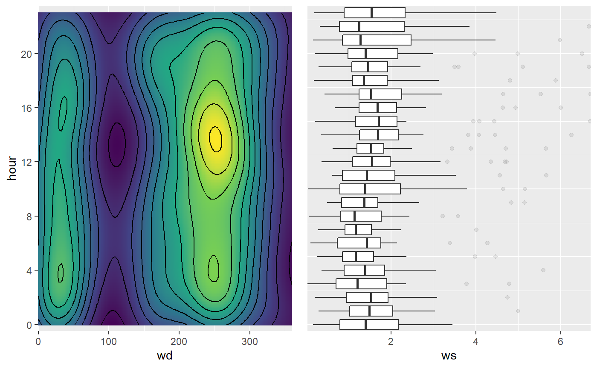
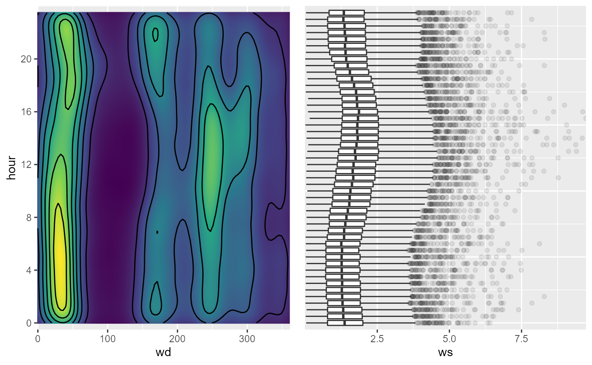
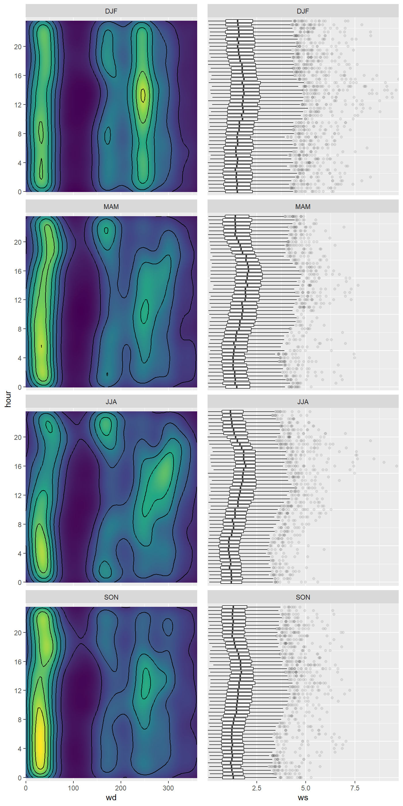

vignettes/articles/Wind_Density.Rmd
Wind_Density.RmdInspiriert bei visualising diurnal wind climatologies.
Die multiplot Funktion ist kopiert von Winston Chang’s R cookbook. Die Verwendung von cowplot::plot_grid() oder einer anderen Alternative ist empfohlen. Allerdings wurde an dieser Stelle darauf verzichtet um nicht eine zusätzliche Abhängigkeit zu erzeugen.
library(magrittr)
library(ggplot2)
library(rOstluft)
fn <- rOstluft.data::f("Zch_Stampfenbachstrasse_h1_2013_Jan.csv")
df <- read_airmo_csv(fn)
df <- rolf_to_openair(df)
df <- dplyr::mutate(df, hour = lubridate::hour(.data$date))
density <- ggplot(df, aes(wd, hour)) +
stat_density_2d(aes(fill = stat(density)), geom = "raster", contour = FALSE,
show.legend = FALSE, n = 200, na.rm = TRUE) +
scale_fill_viridis_c() +
scale_y_continuous(breaks = seq(0, 24, 4)) +
geom_density2d(color = "black", na.rm = TRUE) +
coord_cartesian(ylim = c(-0.5, 23.5), expand = FALSE)
box <- ggplot(df, aes(x = hour, y = ws, group = hour)) +
geom_boxplot(outlier.alpha = 0.1, na.rm = TRUE) +
coord_flip(xlim = c(-0.5, 23.5), expand = FALSE) +
theme(axis.title.y=element_blank(),
axis.text.y=element_blank(),
axis.ticks.y=element_blank())
multiplot(density, box, cols = 2)
# mit 30 min Daten
fn <- rOstluft.data::f("Zch_Stampfenbachstrasse_2010-2014.csv")
df <- read_airmo_csv(fn)
df <- rolf_to_openair(df)
df <- dplyr::mutate(df,
season = rOstluft.plot::cut_season(.data$date),
hour = lubridate::hour(.data$date) + lubridate::minute(.data$date) / 60
)
density <- ggplot(df, aes(wd, hour)) +
stat_density_2d(aes(fill = stat(density)), geom = "raster", contour = FALSE,
show.legend = FALSE, n = 200, na.rm = TRUE) +
scale_fill_viridis_c() +
scale_y_continuous(breaks = seq(0, 20, 4)) +
geom_density2d(color = "black", na.rm = TRUE) +
coord_cartesian(ylim = c(-0.5, 24), expand = FALSE)
box <- ggplot(df, aes(x = hour, y = ws, group = hour)) +
geom_boxplot(outlier.alpha = 0.1, na.rm = TRUE) +
coord_flip(xlim = c(-0.5, 24), expand = FALSE) +
theme(axis.title.y=element_blank(),
axis.text.y=element_blank(),
axis.ticks.y=element_blank())
multiplot(density, box, cols = 2)
# facetting
density <- density + facet_wrap(vars(season), ncol = 1)
box <- box + facet_wrap(vars(season), ncol = 1)
multiplot(density, box, cols = 2)